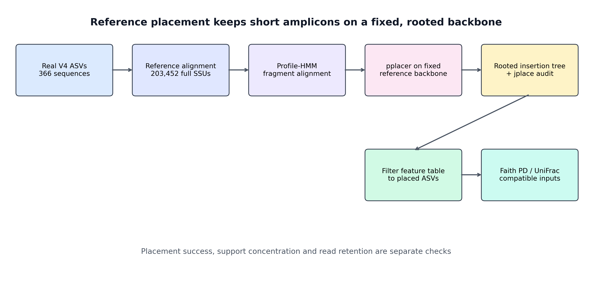
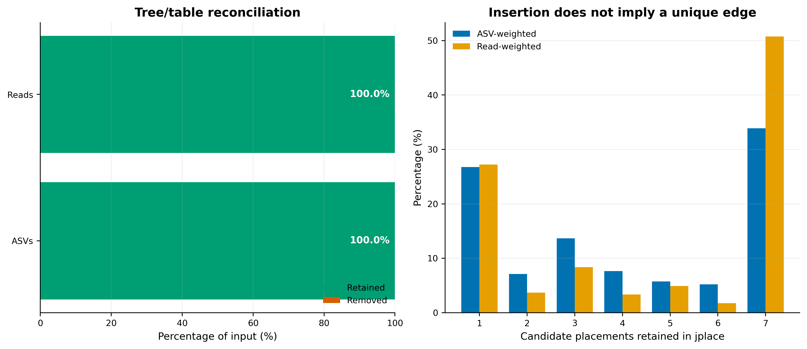
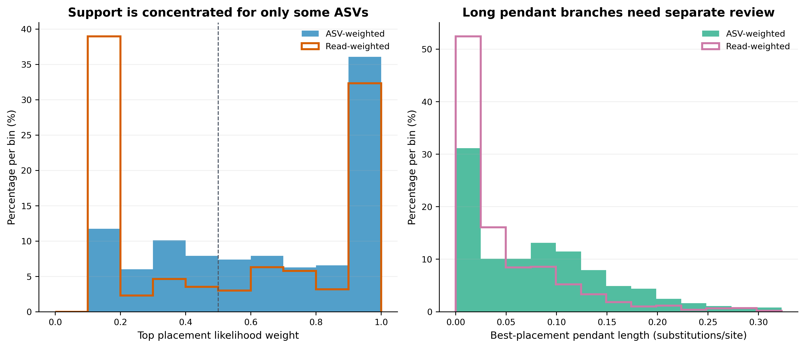
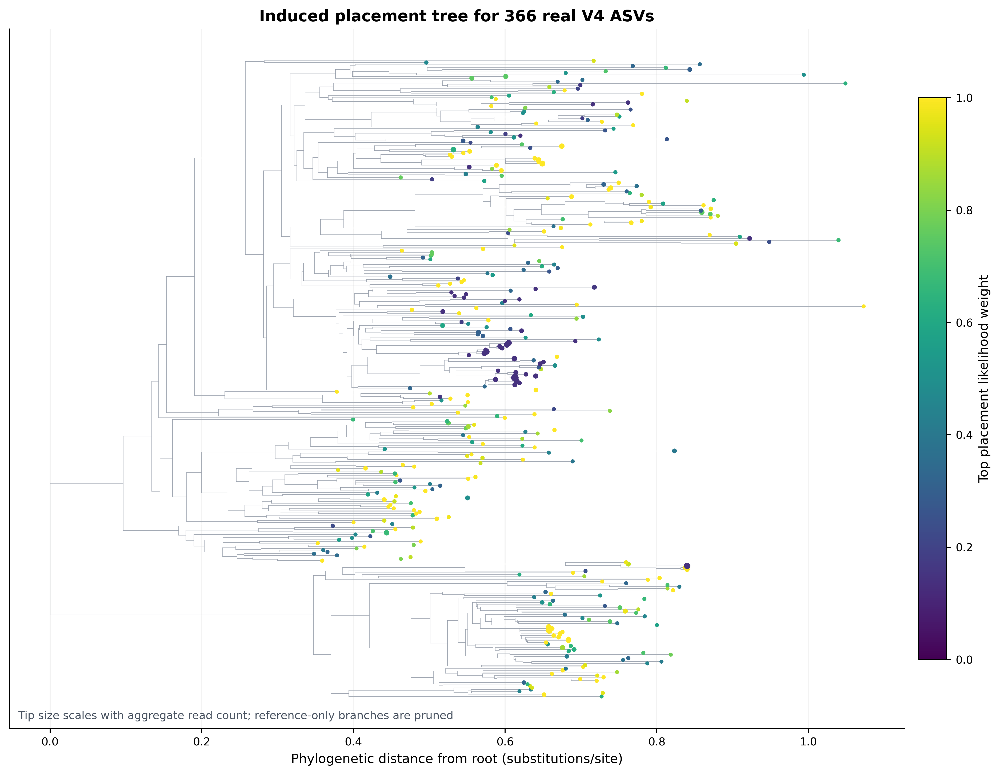

mamba env create \
-n microbiome-qiime2-2026.4 \
-f env/qiime2.yml \
--channel-priority flexible
conda activate microbiome-qiime2-2026.4
qiime info
qiime fragment-insertion sepp --help
qiime fragment-insertion filter-features --help
python - <<'PY'
from importlib.metadata import version
for package in (
"qiime2", "q2cli", "q2-fragment-insertion", "sepp",
"biom-format", "dendropy"
):
print(package, version(package))
PY
hmmbuild -h | head -n 3
pplacer --version系统发育树（SEPP fragment insertion）
UniFrac 之前，先得到可信的系统发育树
Faith’s PD 和 UniFrac 把分支长度纳入比较，因此它们不仅依赖丰度表，也依赖短读段被放在树上的什么位置。使用固定参考树可以统一坐标，却不能为 V4 中没有的信息补出更高分辨率。
本例 366 条 ASV 全部成功放置，说明没有因缺少树尖端而丢失 reads，不说明所有位置同样可靠。候选位置的 likelihood weight 描述给定模型和候选范围内的相对支持；参考中缺少近缘类群时，最高权重也不能充当外部准确率。应联合查看位置歧义、末端分支长度和这些 ASV 承载的 reads：少数低频 ASV 与占大部分 reads 的不稳定放置，对不同系统发育指标的影响并不相同。没有适用于所有 marker 和参考树的统一长枝删除阈值。
Janssen 等人的 SEPP 评估中，Figure 5 用已知来源的 V4 片段量化插入误差与歧义，Figure S2 比较 alignment/placement subset 的运行代价，Figure 12 对比 reference insertion 与 de novo tree construction。下面沿用这套验证逻辑，在真实 ASV 上检查插入、过滤和系统发育树的可用性。




重要成功放置不等于位置没有不确定性
SEPP 是 reference placement，不是从头估计一棵新树。输出树能提供共享参考坐标和系统发育距离，但不会让短 V4 获得全长 16S 的分辨率。
本次固定环境与真实结果为：
Runtime
QIIME 2 / q2cli: 2026.4.0
q2-fragment-insertion: 2026.4.0
SEPP / HMMER / pplacer: 4.5.6 / 3.4 / 1.1.alpha19
Threads: 8
Alignment / placement subset: 1,000 / 5,000
Reference contract
Artifact: sepp-refs-gg-13-8.qza
Semantic type: SeppReferenceDatabase
Artifact UUID: a14c6180-506b-4ecb-bacb-9cb30bc3044b
SHA-256: e252b83d7d5fbf2a9e14e594768e3578b33b557c34e22b6abc83b324689b1360
Artifact framework/plugin: QIIME 2 / q2-fragment-insertion 2019.10.0
Embedded SEPP version: 4.3.10
Reference alignment: 203,452 sequences × 1,285 columns
Reference tree: 203,452 tips; rooted; no negative lengths
Real V4 query
ASVs / aggregate reads: 366 / 5,213
Sequence length: 252–303 nt; median 253 nt
Placed and retained: 366 ASVs / 5,213 reads
Removed after placement: 0 ASVs / 0 reads
Placement diagnostics
Top likelihood-weight median: 0.6942
Read-weighted median: 0.5033
Top weight < 0.50: 131 ASVs / 2,576 reads
Top weight >= 0.90: 132 ASVs / 1,686 reads
One candidate position: 98 ASVs / 1,419 reads
Seven candidate positions: 124 ASVs / 2,647 reads
Pendant-length median / q95: 0.0721 / 0.2121
Output tree
Total / query / reference tips: 203,818 / 366 / 203,452
Root degree: 2
Missing / negative lengths: 0 / 0
Validation: 74 / 74 PASS这些 ASV 来自 nf-core/test-datasets 固定提交 f282ad2bafb3ca90190ec87290066ee1985df655 的真实 MiSeq V4 数据。原始 10,000 对 reads 经 anchored、IUPAC-aware 515F/806R 去引物和 DADA2 后保留 5,213 对非嵌合 reads，得到 366 个 ASV。
开始前：数据与运行环境
在 Linux 或 WSL2 的项目文件夹中运行下面的下载命令。下载后保留这里的相对目录，后续命令使用同一组文件。
base_url="https://raw.githubusercontent.com/petemeng/microbiome-best-practices/3cb6a817e0c73ab7ecbec1cedc1ad80cbb9ecfaa"
for file in \
env/qiime2.yml \
scripts/validate_sepp_phylogeny.py
do
mkdir -p "$(dirname "$file")"
curl --fail --location --retry 3 "$base_url/$file" --output "$file" || break
done本次分析的数据、环境与图形设置
安装并核对 QIIME 2 环境
下载并验证专用 SEPP reference
ROOT="$(pwd -P)"
mkdir -p "${ROOT}/downloads"
curl -fL --retry 3 \
-o "${ROOT}/downloads/sepp-refs-gg-13-8.qza" \
https://data.qiime2.org/classifiers/sepp-ref-dbs/sepp-refs-gg-13-8.qza
printf '%s %s\n' \
e252b83d7d5fbf2a9e14e594768e3578b33b557c34e22b6abc83b324689b1360 \
"${ROOT}/downloads/sepp-refs-gg-13-8.qza" \
| sha256sum --check -
qiime tools peek "${ROOT}/downloads/sepp-refs-gg-13-8.qza"
qiime tools validate \
"${ROOT}/downloads/sepp-refs-gg-13-8.qza" \
--level maxqiime tools peek 应显示：
UUID: a14c6180-506b-4ecb-bacb-9cb30bc3044b
Type: SeppReferenceDatabase
Format: SeppReferenceDirFmt看清代表序列和频数结构
DATA="data/small/taxonomy-databases"
gzip -t "${DATA}/query-v4-asvs.fasta.gz"
gzip -cd "${DATA}/query-v4-asvs.fasta.gz" | head -n 6
head -n 8 "${DATA}/query-v4-asv-abundance.tsv"
printf '%s %s\n' \
fa71915be8007d36ec70f85d28401f5a94d0d33eca323782cc937cfc4bcf1af4 \
"${DATA}/query-v4-asvs.fasta.gz" \
| sha256sum --check -
printf '%s %s\n' \
a80e3b94d8632c48fb6c01e788e842c022c3b1ee64b79dc94456618328895e6e \
"${DATA}/query-v4-asv-abundance.tsv" \
| sha256sum --check -自己的最小输入结构应为：
representative-sequences.fasta
>ASV_ID
ACGT...
otutab.tsv
FeatureID<TAB>Sample_1<TAB>Sample_2...
taxonomy.tsv
FeatureID<TAB>Domain<TAB>Phylum... # 下游注释使用
metadata.tsv
SampleID<TAB>Group<TAB>Batch... # 下游比较使用安装 R 作图依赖并内联出版函数
install.packages(
c("ggplot2", "dplyr", "readr", "tidyr", "scales", "patchwork"),
repos = "https://cloud.r-project.org"
)library(ggplot2)
library(dplyr)
library(readr)
library(tidyr)
library(scales)
library(patchwork)
set.seed(20260721)
pal_pub <- c(
"#0072B2", "#D55E00", "#009E73", "#CC79A7",
"#E69F00", "#56B4E9", "#F0E442", "#999999"
)
scale_color_pub <- function(...) {
ggplot2::scale_color_manual(values = pal_pub, ...)
}
scale_fill_pub <- function(...) {
ggplot2::scale_fill_manual(values = pal_pub, ...)
}
theme_pub <- function(base_size = 12) {
ggplot2::theme_bw(base_size = base_size, base_family = "sans") +
ggplot2::theme(
panel.grid.major.x = ggplot2::element_blank(),
panel.grid.minor = ggplot2::element_blank(),
axis.text = ggplot2::element_text(color = "black"),
axis.ticks = ggplot2::element_line(color = "black", linewidth = 0.3),
plot.title = ggplot2::element_text(face = "bold", color = "#111827"),
plot.subtitle = ggplot2::element_text(color = "#4B5563"),
legend.key = ggplot2::element_blank(),
legend.background = ggplot2::element_rect(
fill = scales::alpha("white", 0.85), color = NA
)
)
}
save_pub <- function(
plot,
file_base,
width = 170,
height = 105,
units = "mm",
dpi = 350
) {
dir.create(dirname(file_base), recursive = TRUE, showWarnings = FALSE)
ggplot2::ggsave(
paste0(file_base, ".pdf"), plot,
width = width, height = height, units = units,
device = grDevices::cairo_pdf
)
ggplot2::ggsave(
paste0(file_base, ".png"), plot,
width = width, height = height, units = units,
dpi = dpi, bg = "white"
)
ggplot2::ggsave(
paste0(file_base, ".tiff"), plot,
width = width, height = height, units = units,
dpi = dpi, compression = "lzw", bg = "white"
)
}SEPP 如何把短序列放入参考树
区分参考树定位与从头建树
de novo 路线通常是：
query sequences
→ multiple-sequence alignment
→ alignment masking
→ tree inference
→ midpoint/outgroup rootingSEPP 路线则是：
fixed reference alignment + rooted reference tree
+ short query fragments
→ profile-HMM alignment
→ pplacer likelihood placement
→ rooted insertion tree + jplace短 V4 只有约 253 nt，彼此之间可用于估计深层分叉的信息有限。SEPP 保留一个由长参考序列建立的 backbone，把 query 放进同一坐标系；这常比只用短片段从头推断深层拓扑更稳，也便于不同研究共享参考坐标。
但代价同样明确：query 的位置受 reference scope、reference topology、alignment 和 placement 参数约束。SEPP 输出的是“在这套固定 backbone 下最受支持的位置”，不是无参考假设下重新发现的整棵树。
先用轮廓 HMM 比对，再用 pplacer 定位
reference alignment 被切分为较小子问题后，profile hidden Markov model（profile HMM）把每条短 query 对齐到参考 alignment。随后 pplacer 比较 query 放到候选 reference edges 上的 likelihood，并把候选位置及其相对支持写入 jplace。
本次显式固定：
alignment subset size = 1,000
placement subset size = 5,000
threads = 8这两个 subset 是计算分解参数，不是抽走 query 的“抽样比例”。改动它们可能影响运行时间、内存和边界 query 的位置，因此要像数据库 release 一样写进 Methods。
计算 Faith’s PD 与 UniFrac 为什么需要有根树
QIIME 2 的 SEPP 输出语义类型为 Phylogeny[Rooted]。下游系统发育多样性依赖树上的 branch lengths 和样本拥有的 tips：
\[ \mathrm{Faith\ PD}(s) = \sum_{e \in E_s} \ell_e \]
其中 \(E_s\) 是连接样本 \(s\) 所有观测 tips 与树根所需的边，\(\ell_e\) 是边长。UniFrac 则比较样本在树枝上的共享与非共享质量。若树没有根、tip ID 与 feature table 不一致，或枝长缺失，这些量就没有完整计算合同。
因此验收不应停在“生成了 .qza”，而要核对：
- semantic type 确实是
Phylogeny[Rooted]； - query 与 reference tip 数量符合预期；
- feature IDs、tree tips 与 jplace names 一一对应；
- branch lengths 完整且没有负值；
- 进入下游的 table 已按 tree tips 过滤。
参考树与分类注释器不能相互替代
本次 SEPP reference 是官方的 Greengenes 13_8 99% backbone，用于提供 alignment 和 phylogenetic coordinates。第 14–15 篇的 SILVA、GTDB 或 Greengenes2 taxonomy reference/classifier 则用于给 ASV 分配名称。
这两个合同可以不同：
representative sequence
├─ taxonomy classifier → taxonomic label
└─ SEPP reference → phylogenetic position不能把“用 SILVA 注释”误写成“树也由 SILVA 构建”，也不能因为 SEPP backbone 名为 Greengenes 13_8，就把它当作当前 taxonomy truth。这个旧而冻结的 backbone 仍有共享坐标价值，但其 release 年代、reference scope 和系统发育假设必须如实报告。
警告不要替换成名字相近的 Greengenes2 文件
Greengenes2 2024.09 taxonomy/reference release 与这里的 SeppReferenceDatabase 不是可互换文件。fragment-insertion sepp 需要包含 reference alignment、tree 和 SEPP 分区信息的专用 Artifact；普通 FASTA、taxonomy QZA 或 classifier QZA 都不能代替。
likelihood weight 是候选位置间的相对支持
jplace 为每个 query 保存候选 edges。本页把最高候选的 likelihood weight ratio（LWR）记为 \(w_{\max}\)：
\[ w_i = \frac{L_i}{\sum_j L_j}, \qquad w_{\max}=\max_i w_i \]
它回答“在保留下来的候选位置中，最佳位置占多少相对支持”，不是经过外部校准的“位置正确概率”。本次 131/366 个 ASV 的 top LWR 低于 0.50，且它们代表 2,576/5,213 条 reads；因此即使 100% query 都被插入，也不能写成“所有 ASV 均被可靠定位”。
若多个候选位置具有相近权重，应在涉及单个 taxon 的树上解释、phylogenetic balance 或局部分支结论中保持谨慎。群落层面的整体 UniFrac 有时对少量局部歧义较稳，但这需要敏感性分析，而不是默认成立。
同时检查新接枝长度与插入位置
pendant_length：从候选 reference edge 到 query tip 的新枝长度；异常长可能提示 reference 缺口、错误/嵌合序列或 query 与 backbone 差异较大。distal_length：插入点在候选 reference edge 上的位置；它描述沿该 edge 的切分位置。
本次 pendant length 中位数为 0.0721，95% 分位数为 0.2121，最大值为 0.3167。它们是筛查指标，不存在脱离 reference 和 marker region 的普适“合格阈值”。应优先回看高 pendant length ASV 的频数、嵌合体处理、长度、taxonomy 与候选位置数。
系统发育分析前，先记录哪些特征被过滤
若某些 ASV 无法放入树，feature table 仍保留它们，后续 phylogenetic metric 就会遇到 table/tree ID 不一致。正确顺序是：
representative sequences → SEPP → rooted tree
feature table + rooted tree → filter-features
filtered table + rooted tree → Faith's PD / UniFrac本例恰好 366/366 个 ASV、5,213/5,213 条 reads 都被保留，但仍保存空的 removed table 和 retention audit。对自己的数据，必须同时报告 ASV retention 与 read-weighted retention；少量高丰度 ASV 丢失可能比许多 singleton 丢失更严重。
文件 byte hash 不是重复运行的生物学不变量
固定输入与参数的两次独立运行中，366 条 query 的候选 edge、likelihood、LWR、distal length 和 pendant length 完全一致；两棵树的全部 366×366 query tip pairwise distances 也完全一致。QZA UUID、JSON/Newick 序列化顺序和零长度 split 的表示可能变化，因此 archive byte hash 不应被当作生物学结果相等的唯一标准。
更稳健的重复运行检查是：
- tip set 完全一致；
- 每条 query 的候选位置及数值一致；
- rooted status、枝长边界与负枝长数量一致；
- induced query-tree pairwise distances 一致；
- feature/read retention 一致。
把代表序列放入参考树并检查覆盖
建立全部使用绝对路径的工作目录
SEPP 的内部脚本会切换临时工作目录。reference、cache、输入和输出如果使用相对路径，可能在运行几分钟后才报“文件不存在”。先把项目根目录转成绝对路径：
ROOT="$(pwd -P)"
DATA="${ROOT}/data/small/taxonomy-databases"
WORK="${ROOT}/work/16-sepp"
OUT="${ROOT}/results/16-sepp-phylogeny"
FIG="${ROOT}/figures"
REF="${ROOT}/downloads/sepp-refs-gg-13-8.qza"
CACHE="${WORK}/qiime-cache"
mkdir -p "${WORK}" "${OUT}" "${FIG}"
qiime tools cache-create --cache "${CACHE}"导入代表序列
gzip -cd "${DATA}/query-v4-asvs.fasta.gz" \
> "${WORK}/query-v4-asvs.fasta"
qiime tools import \
--type 'FeatureData[Sequence]' \
--input-path "${WORK}/query-v4-asvs.fasta" \
--output-path "${OUT}/query-v4-asvs.qza" \
--validate-level max自己的代表序列可直接替换 query-v4-asvs.fasta，但 FASTA header 必须与 otutab.tsv 的 feature ID 完全一致。
把真实频数导入 QIIME 2 feature table
本例公开文件只有每个 ASV 的聚合频数。下面构造一个名为 AllReads 的单列 table，只用于核对放置前后 ASV/read retention，不能用于 alpha、beta、多组比较或 PERMANOVA：
python3 - "${DATA}/query-v4-asv-abundance.tsv" \
"${WORK}/query-abundance.biom.tsv" <<'PY'
import csv
import sys
source, target = sys.argv[1:]
rows = []
with open(source, newline="", encoding="utf-8-sig") as handle:
reader = csv.DictReader(handle, delimiter="\t")
for row in reader:
feature_id = row["Feature ID"]
if feature_id.startswith("#"):
continue
rows.append((feature_id, int(float(row["Frequency"]))))
with open(target, "w", encoding="utf-8", newline="") as handle:
handle.write("# Constructed from aggregate feature frequencies\n")
handle.write("#OTU ID\tAllReads\n")
for feature_id, count in rows:
handle.write(f"{feature_id}\t{count}\n")
PY
biom convert \
-i "${WORK}/query-abundance.biom.tsv" \
-o "${WORK}/query-abundance.biom" \
--table-type "OTU table" \
--to-hdf5
qiime tools import \
--type 'FeatureTable[Frequency]' \
--input-path "${WORK}/query-abundance.biom" \
--input-format BIOMV210Format \
--output-path "${OUT}/query-abundance-table.qza" \
--validate-level max自己的项目应直接从完整 otutab.tsv 构建保留所有样本列的 BIOM：
biom convert \
-i "${ROOT}/data/otutab.tsv" \
-o "${WORK}/otutab.biom" \
--table-type "OTU table" \
--to-hdf5
qiime tools import \
--type 'FeatureTable[Frequency]' \
--input-path "${WORK}/otutab.biom" \
--input-format BIOMV210Format \
--output-path "${OUT}/study-table.qza" \
--validate-level max运行 SEPP fragment insertion
qiime tools validate "${REF}" --level max
qiime fragment-insertion sepp \
--i-representative-sequences "${OUT}/query-v4-asvs.qza" \
--i-reference-database "${REF}" \
--p-alignment-subset-size 1000 \
--p-placement-subset-size 5000 \
--p-threads 8 \
--o-tree "${OUT}/sepp-insertion-tree.qza" \
--o-placements "${OUT}/sepp-placements.qza" \
--use-cache "${CACHE}" \
--verbose 2>&1 \
| tee "${OUT}/qiime-sepp.log"输出分别回答两个问题：
sepp-insertion-tree.qza：包含 reference backbone 和 query tips 的 rooted tree，供系统发育距离使用；sepp-placements.qza：jplace placement 记录，供候选 edge、LWR 和枝长审计。
按树尖端过滤 feature table
qiime fragment-insertion filter-features \
--i-table "${OUT}/query-abundance-table.qza" \
--i-tree "${OUT}/sepp-insertion-tree.qza" \
--o-filtered-table "${OUT}/sepp-filtered-table.qza" \
--o-removed-table "${OUT}/sepp-removed-table.qza" \
--use-cache "${CACHE}" \
--verbose换成自己的数据时，把 query-abundance-table.qza 替换为保留全部样本的 study-table.qza。下游使用 sepp-filtered-table.qza，不要继续使用过滤前的 table。
maximum validation、导出与快速核对
for artifact in \
query-v4-asvs.qza \
query-abundance-table.qza \
sepp-insertion-tree.qza \
sepp-placements.qza \
sepp-filtered-table.qza \
sepp-removed-table.qza
do
qiime tools validate "${OUT}/${artifact}" --level max
qiime tools peek "${OUT}/${artifact}"
done
mkdir -p \
"${WORK}/export-tree" \
"${WORK}/export-placements" \
"${WORK}/export-filtered" \
"${WORK}/export-removed"
qiime tools export \
--input-path "${OUT}/sepp-insertion-tree.qza" \
--output-path "${WORK}/export-tree"
qiime tools export \
--input-path "${OUT}/sepp-placements.qza" \
--output-path "${WORK}/export-placements"
qiime tools export \
--input-path "${OUT}/sepp-filtered-table.qza" \
--output-path "${WORK}/export-filtered"
qiime tools export \
--input-path "${OUT}/sepp-removed-table.qza" \
--output-path "${WORK}/export-removed"
biom summarize-table \
-i "${WORK}/export-filtered/feature-table.biom"
biom summarize-table \
-i "${WORK}/export-removed/feature-table.biom"一键生成完整审计与发表图
下面的验证入口会从原始 query 和官方 reference 重新执行整个过程，并检查 environment、checksum、reference contents、Artifact、provenance、jplace、tree tips、branch lengths、BIOM retention 和 12 个图形文件：
python3 scripts/validate_sepp_phylogeny.py \
--project-root "${ROOT}" \
--reference-database "${REF}" \
--output-dir "${OUT}" \
--figure-dir "${FIG}" \
--qiime-env microbiome-qiime2-2026.4 \
--threads 8验收成功时末行应为：
SEPP validation passed: 74/74 checks, 366/366 ASVs retained接入 Faith’s PD 与 UniFrac
自己的完整样本 table 经过 placement filtering 后，可进入 QIIME 2 phylogenetic core metrics。抽平深度必须由样本 library-size 分布决定，并与保留样本数一起报告：
SAMPLING_DEPTH=1000
qiime diversity core-metrics-phylogenetic \
--i-phylogeny "${OUT}/sepp-insertion-tree.qza" \
--i-table "${OUT}/sepp-filtered-table.qza" \
--p-sampling-depth "${SAMPLING_DEPTH}" \
--m-metadata-file "${ROOT}/data/metadata.tsv" \
--output-dir "${ROOT}/results/phylogenetic-core-metrics"本例的 AllReads 聚合 table 不是样本矩阵，不能用它运行这一段并解释群落差异。
判断哪些ASV进入了系统发育分析
把“成功率”与“放置质量”画在同一证据面板
retention <- readr::read_tsv(
"results/16-sepp-phylogeny/feature-retention-audit.tsv",
show_col_types = FALSE
)
support <- readr::read_tsv(
"results/16-sepp-phylogeny/placement-support-bins.tsv",
show_col_types = FALSE
)
candidates <- readr::read_tsv(
"results/16-sepp-phylogeny/candidate-placement-counts.tsv",
show_col_types = FALSE
)
p_retention <- retention |>
dplyr::mutate(
unit = factor(unit, levels = c("ASVs", "Reads")),
label = scales::percent(retention_fraction, accuracy = 0.1)
) |>
ggplot(aes(unit, retention_fraction, fill = unit)) +
geom_col(width = 0.62, show.legend = FALSE) +
geom_text(aes(label = label), vjust = -0.45, fontface = "bold") +
scale_fill_pub() +
scale_y_continuous(
labels = scales::percent,
limits = c(0, 1.08),
expand = expansion(mult = c(0, 0))
) +
labs(
x = NULL,
y = "Retention after placement",
title = "Feature-table retention"
) +
theme_pub()
p_support <- support |>
dplyr::mutate(
top_likelihood_weight_bin = factor(
top_likelihood_weight_bin,
levels = c("<0.50", "0.50-<0.90", ">=0.90")
)
) |>
ggplot(aes(top_likelihood_weight_bin, reads, fill = top_likelihood_weight_bin)) +
geom_col(width = 0.68, show.legend = FALSE) +
geom_text(aes(label = scales::comma(reads)), vjust = -0.35) +
scale_fill_pub() +
scale_y_continuous(labels = scales::comma, expand = expansion(mult = c(0, 0.12))) +
labs(
x = "Top likelihood weight",
y = "Aggregate reads",
title = "Placement support is not uniformly high"
) +
theme_pub()
p_candidates <- candidates |>
ggplot(aes(candidate_placements, reads)) +
geom_col(width = 0.72, fill = pal_pub[1]) +
geom_point(aes(y = asvs * 20), color = pal_pub[2], size = 2.2) +
scale_x_continuous(breaks = 1:7) +
scale_y_continuous(
labels = scales::comma,
sec.axis = sec_axis(~ . / 20, name = "ASVs")
) +
labs(
x = "Candidate placements retained in jplace",
y = "Aggregate reads",
title = "Placement ambiguity"
) +
theme_pub()
p_audit <- p_retention + p_support + p_candidates +
patchwork::plot_annotation(tag_levels = "A")
save_pub(
p_audit,
"figures/16-placement-retention-audit-redraw",
width = 180,
height = 78
)诊断长枝与低支持 query
placement <- readr::read_tsv(
"results/16-sepp-phylogeny/placement-audit.tsv",
show_col_types = FALSE
)
p_diag <- ggplot(
placement,
aes(
x = top_likelihood_weight,
y = pendant_length,
size = frequency,
color = candidate_placements
)
) +
geom_point(alpha = 0.72) +
scale_size_area(max_size = 8, labels = scales::comma) +
scale_color_viridis_c(option = "C", direction = -1) +
geom_vline(xintercept = 0.5, linetype = 2, color = "#6B7280") +
labs(
x = "Top likelihood weight",
y = "Pendant length",
size = "Aggregate reads",
color = "Candidate\nplacements",
title = "Inspect support and branch length together",
subtitle = "Dashed line is a diagnostic guide, not a correctness threshold"
) +
theme_pub()
save_pub(
p_diag,
"figures/16-placement-diagnostics-redraw",
width = 125,
height = 100
)图内只保留英文轴、图例和注释；正文再用中文解释。全树有 203,818 个 tips，不适合直接塞进正文。正文优先放 retention/support diagnostics；若研究问题需要局部分支，再预先定义目标 clade 并展示 reference 与 query tips，不能事后只挑“最好看”的分支。
常见坑
注意审稿人最容易追问的 10 个问题
- reference 只写“Greengenes”：必须给
sepp-refs-gg-13-8.qza、官方 URL、SHA-256、Artifact UUID 和 release 边界。
- 把 taxonomy reference 当 SEPP reference：普通 sequence/taxonomy/classifier Artifact 不含 SEPP 所需 alignment、tree 与分区。
- 路径使用相对地址：SEPP 内部切换临时目录，导致 reference 或 cache 在中途失联；全部转为绝对路径。
- 只保存树，不保存 placements：没有 jplace 就无法审计候选 edges、LWR、pendant length 和 placement ambiguity。
- 把 100% placed 写成 100% reliable：本例仍有 131 个 ASV 的 top LWR < 0.50；成功插入与唯一、正确放置是不同命题。
- 不按树过滤 feature table：无树尖端的 feature 会破坏 phylogenetic metric 的 ID 合同。
- 只报 ASV retention：必须同时给 read-weighted retention，避免漏掉少数高丰度序列。
- 把 query-only tree 用于正式 UniFrac：它适合诊断和展示；正式距离使用包含 reference backbone 的 rooted insertion tree。
- 把 LWR 当正确概率：它是保留候选位置间的相对支持，未经过外部 accuracy calibration。
- 按 QZA/JSON byte hash 判断重复性：UUID 与序列化顺序可变；应比较 tip set、per-query placement 数值、枝长和 pairwise distances。
警告高 pendant length 或低 LWR 不是自动删除规则
先核对该 ASV 的序列质量、嵌合体筛查、长度、丰度、taxonomy 和 reference scope。若删除，必须预先定义规则，并报告 ASV/read 损失及下游敏感性；不要看完组间结果后再删。
报告SEPP插入树与参考覆盖
下面模板可直接替换方括号内容：
Representative 16S rRNA gene amplicon sequence variants (ASVs) were phylogenetically placed using the QIIME 2 q2-fragment-insertion plugin (version [2026.4.0]) and SEPP (version [4.5.6]). We used the QIIME 2 Greengenes 13_8 99% SEPP reference database (
sepp-refs-gg-13-8.qza; SHA-256: [checksum]; Artifact UUID: [UUID]). Fragment insertion was run with an alignment subset size of [1,000], a placement subset size of [5,000], and [8] threads. The resultingPhylogeny[Rooted]andPlacementsArtifacts were maximum-validated, and feature identifiers were reconciled among the representative-sequence FASTA, jplace records, tree tips, and feature table. The feature table was filtered to retain only placed ASVs before phylogenetic diversity analyses. In total, [retained ASVs]/[input ASVs] ASVs representing [retained reads]/[input reads] reads were retained. Placement uncertainty was summarized using the number of candidate placements, top likelihood weight ratio, and pendant branch length. Faith’s phylogenetic diversity and weighted/unweighted UniFrac distances were calculated from the filtered table and rooted insertion tree at a rarefaction depth of [depth], retaining [n] samples. Random procedures used a fixed seed of [seed].
若没有分析 Faith’s PD 或 UniFrac，删除最后一句，不要把“生成了树”写成“完成了系统发育多样性分析”。若额外按 LWR 或 pendant length 过滤，也要写出阈值、阈值制定时点、ASV/read 损失和敏感性分析。
将SEPP插入树与参考覆盖用于自己的研究
准备四类资产
| Asset | 最小要求 | 最常见错误 |
|---|---|---|
otutab.tsv |
feature × sample 整数计数；ASV ID 唯一 | 行列方向反了，或 ID 被表格软件改写 |
taxonomy.tsv |
与 ASV ID 对齐；用于下游标签和异常审查 | 把 taxonomy reference 当成 SEPP reference |
metadata.tsv |
sample ID 与 otutab 列名一一对应 |
样本缺失、重复或隐含批次未记录 |
| representative FASTA | 每个 table feature 一条同方向序列 | header 与 table feature ID 不一致 |
先做集合审计：
otutab <- readr::read_tsv("data/otutab.tsv", show_col_types = FALSE)
taxonomy <- readr::read_tsv("data/taxonomy.tsv", show_col_types = FALSE)
metadata <- readr::read_tsv("data/metadata.tsv", show_col_types = FALSE)
feature_ids <- otutab[[1]]
taxonomy_ids <- taxonomy[[1]]
sample_ids <- names(otutab)[-1]
metadata_ids <- metadata[[1]]
stopifnot(!anyDuplicated(feature_ids))
stopifnot(!anyDuplicated(taxonomy_ids))
stopifnot(!anyDuplicated(sample_ids))
stopifnot(!anyDuplicated(metadata_ids))
stopifnot(setequal(feature_ids, taxonomy_ids))
stopifnot(setequal(sample_ids, metadata_ids))再核对 FASTA IDs：
grep '^>' data/representative-sequences.fasta \
| sed 's/^>//; s/[[:space:]].*$//' \
| sort -u \
> work/16-sepp/fasta-ids.txt
cut -f1 data/otutab.tsv \
| tail -n +2 \
| sort -u \
> work/16-sepp/table-ids.txt
diff -u \
work/16-sepp/table-ids.txt \
work/16-sepp/fasta-ids.txt只改输入路径，不改审计逻辑
把代码中的两处输入替换为：
data/small/taxonomy-databases/query-v4-asvs.fasta.gz
→ data/representative-sequences.fasta
data/small/taxonomy-databases/query-v4-asv-abundance.tsv
→ data/otutab.tsv然后保留以下步骤：
import representative sequences
→ import full sample-by-feature table
→ SEPP with versioned reference
→ maximum validation
→ export and reconcile FASTA/jplace/tree/table IDs
→ filter table to placed tips
→ report ASV- and read-weighted retention
→ inspect LWR/candidates/pendant length
→ run phylogenetic metrics on filtered table正式统计前完成四项树质量检查
tree是Phylogeny[Rooted]，且没有缺失或负 branch lengths；- 所有进入分析的 table features 都能在 tree tips 中找到；
- removed ASV/read 比例已报告并回查其 taxonomy、长度与丰度；
- reference checksum、subset 参数、软件版本和 Artifact provenance 已归档。
如果研究对象明显超出 Greengenes 13_8 backbone 的覆盖范围，或 marker 不是兼容的 16S SSU 区域，不要强行运行这个 reference；应寻找与 marker/taxon 匹配并经过验证的 placement reference，或采用明确报告 alignment、tree inference 与 rooting 的 de novo 路线。
参考
- Janssen S, McDonald D, Gonzalez A, et al. Phylogenetic placement of exact amplicon sequences improves associations with clinical information. mSystems. 2018;3:e00021-18. doi:10.1128/mSystems.00021-18
- Mirarab S, Nguyen N, Warnow T. SEPP: SATé-enabled phylogenetic placement. PLoS ONE. 2012;7:e31009. doi:10.1371/journal.pone.0031009
- Matsen FA, Kodner RB, Armbrust EV. pplacer: linear time maximum-likelihood and Bayesian phylogenetic placement of sequences onto a fixed reference tree. BMC Bioinformatics. 2010;11:538. doi:10.1186/1471-2105-11-538
- QIIME 2. q2-fragment-insertion plugin documentation. https://amplicon-docs.qiime2.org/en/stable/references/plugins/fragment-insertion/
- QIIME 2. Parkinson’s Mouse Tutorial: phylogenetic diversity analyses and SEPP reference download. https://docs.qiime2.org/2024.10/tutorials/pd-mice/
- QIIME 2 public data. Greengenes 13_8 99% SEPP reference Artifact. https://data.qiime2.org/classifiers/sepp-ref-dbs/sepp-refs-gg-13-8.qza
- nf-core/test-datasets, ampliseq V4 data, commit
f282ad2bafb3ca90190ec87290066ee1985df655(MIT). https://github.com/nf-core/test-datasets/tree/f282ad2bafb3ca90190ec87290066ee1985df655/testdata